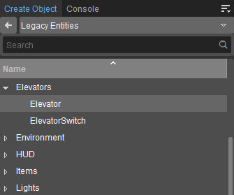

Обзор
Объект «Лифт» имитирует движущуюся платформу. Для управления лифтовым объектом используется переключатель. Используя сущность лифта, вы можете определить объект как лифт, чтобы предоставить игроку доступ к различным этажам здания.
Объекты Elevator и ElevatorSwitch можно найти в Создать объект → Устаревшие объекты → Лифты папка. 
Лифт может работать вместе с кнопкой ElevatorSwitch, которая действует как кнопка вызова/пойти:
- Если платформа окажется не на уровне переключателя, приедет лифт.
- Если платформа находится на уровне переключателя, то при нажатии на переключатель лифт вернется обратно на этаж назначения.
Свойства лифта
Недвижимость | Описание |
|---|---|
Автоматический | Если эта функция включена, лифт автоматически вернется на исходный этаж после достижения этажа назначения. |
Этаж назначения | Указывает этаж назначения. |
FloorCount | Указывает количество этажей. |
FloorHeight | Определяет расстояние между этажами. |
InitialFloor | Указывает этаж, с которого нужно начать. |
Модель | Указывает модель, которую следует использовать. |
SmartObjectClass | Указывает класс смарт-объекта объекта. |
Ускорение | Указывает, насколько быстро ускоряется лифт. |
Ось | Указывает ось лифта для перемещения. |
Скорость | Определяет скорость перемещения. |
StopTIme | Указывает, сколько времени long потребуется лифту, чтобы остановиться. |
| Звук Звук при движении | Указывает, какой звуковой файл будет воспроизводиться во время движения лифта. |
| Звук Звук при запуске | Указывает, какой звуковой файл будет воспроизводиться, когда лифт начнет двигаться. |
| Звук Звук при остановке | Указывает, какой звуковой файл будет воспроизводиться, когда лифт перестанет двигаться. |
ElevatorSwitch Свойства
Недвижимость | Описание |
|---|---|
Задержка | Указывает, как long перед запуском лифта. |
| Включено | Включает переключатель. |
Этаж | Определяет пол. |
Модель | Указывает модель, которую следует использовать. |
SmartObjectClass | Указывает класс смарт-объекта объекта. |
| Использовать расстояние | Определяет максимальное расстояние, с которого можно использовать переключатель. |
| Использовать сообщение | Указывает сообщение, которое будет отображаться, когда игрок приближается к переключателю. |
SoundOnPress | Определяет звук, который будет использоваться при нажатии объекта. |